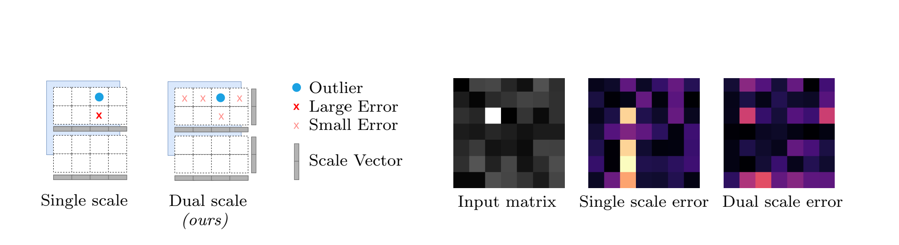
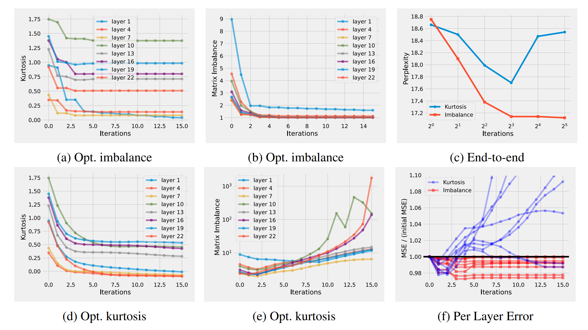
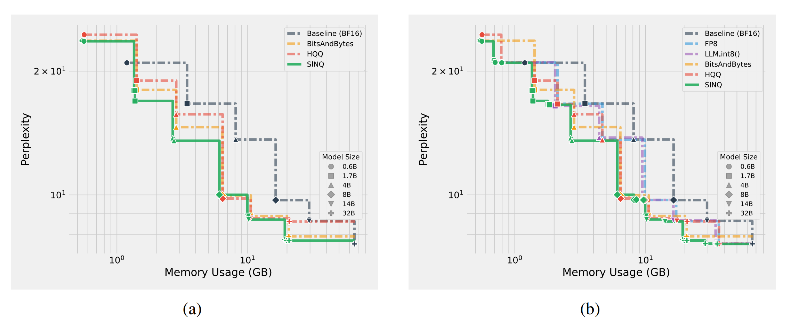

SINQ
Sinkhorn-Normalized Quantization
通过创新的双轴缩放和Sinkhorn-Knopp迭代算法， SINQ在无需校准数据的情况下， 实现了接近甚至超越传统校准量化方法的精度。 这是大语言模型高效部署的重要突破。
什么是模型量化？
模型量化就像给神经网络"打包压缩"：将原始的16位浮点数权重
压缩到4位整数，存储空间减少4倍，内存带宽需求降低4倍，
理论上可以获得4倍加速。但关键是如何在压缩的同时保持模型精度？
现有方法的困境
传统方法面临两难选择：
• Round-to-Nearest (RTN): 快速但在4位及以下精度损失严重
• 校准量化 (AWQ等): 精度高但需要额外数据集和计算开销
核心矛盾：如何在简单高效和高精度之间找到平衡？
• Round-to-Nearest (RTN): 快速但在4位及以下精度损失严重
• 校准量化 (AWQ等): 精度高但需要额外数据集和计算开销
核心矛盾：如何在简单高效和高精度之间找到平衡？
1
双轴缩放 (Dual-Scaling)
传统量化只沿一个维度缩放，SINQ引入双轴缩放：
传统方法: W ≈ s ⊙ (Q + z) // 只有行缩放因子 s
SINQ方法: W ≈ s ⊙ Q ⊙ t // 有行缩放 s 和列缩放 t
核心思想：当矩阵中有异常大的值时，通过增大行缩放s[i]同时减小列缩放t[j]
来平衡误差，在行和列之间"交易"量化误差，避免单个维度的精度损失。

单轴缩放 vs 双轴缩放对比 - 双轴缩放通过行列双向调节实现更好的量化效果
2
矩阵不平衡度 (Matrix Imbalance)
如何判断一个矩阵"容易量化"？论文提出了新指标：
• 高不平衡度 = 难量化（存在高方差的行或列）
双轴缩放正是为了最小化这个不平衡度！
Imbalance(W) = Σᵢ Var(rowᵢ) + Σⱼ Var(colⱼ)
• 低不平衡度 = 容易量化（行和列方差都小且均匀）• 高不平衡度 = 难量化（存在高方差的行或列）
双轴缩放正是为了最小化这个不平衡度！
3
Sinkhorn-Knopp 迭代算法
如何找到最优的双轴缩放因子？采用源自最优传输理论的经典算法：
• 无需梯度: 纯数值迭代，无需反向传播
• 理论保证: 在特定条件下收敛到最优解
s = ones(num_rows)
t = ones(num_cols)
for iteration in range(max_iterations):
# 归一化行
row_vars = compute_row_variances(W * t)
s = 1.0 / sqrt(row_vars)
# 归一化列
col_vars = compute_col_variances(W * s)
t = 1.0 / sqrt(col_vars)
• 快速收敛: 通常10-20次迭代即可• 无需梯度: 纯数值迭代，无需反向传播
• 理论保证: 在特定条件下收敛到最优解
实验结果：Qwen3模型 4-bit量化
在WikiText2数据集上的困惑度（越低越好）：
关键发现：
✓ SINQ（无校准）已超过HQQ并接近AWQ
✓ A-SINQ（有校准）全面领先所有基线
✓ 效果在更大模型上更明显
| 模型 | BF16基线 | RTN | HQQ | SINQ(无校准) | AWQ(有校准) | A-SINQ |
|---|---|---|---|---|---|---|
| Qwen3-1.7B | 16.67 | 17.28 | 17.16 | 16.94 | 17.05 | 16.89 |
| Qwen3-14B | 8.64 | 8.83 | 8.80 | 8.72 | 8.74 | 8.68 |
| Qwen3-32B | 7.60 | 7.73 | 7.70 | 7.65 | 7.66 | 7.62 |
✓ SINQ（无校准）已超过HQQ并接近AWQ
✓ A-SINQ（有校准）全面领先所有基线
✓ 效果在更大模型上更明显

Qwen3-1.7B上的详细实验结果 - 展示不同量化方法在多个任务上的表现对比
3×
量化速度提升
0
校准数据需求
≈0
额外推理开销
100%
架构通用性

内存占用与模型性能的帕累托前沿 - SINQ在内存效率和精度之间取得优异平衡
分块策略 (Tiling)
不是对整个权重矩阵应用一组缩放因子，而是：
• 将大矩阵分成小块（例如128×128）
• 每个块有自己的双轴缩放因子
• 平衡了精度和开销
这种设计让SINQ能够更精细地处理不同区域的量化需求。
• 将大矩阵分成小块（例如128×128）
• 每个块有自己的双轴缩放因子
• 平衡了精度和开销
这种设计让SINQ能够更精细地处理不同区域的量化需求。
与校准方法结合 (A-SINQ)
SINQ可以与现有校准方法（如AWQ）结合：
1️⃣ 先用AWQ的激活感知搜索空间
2️⃣ 再用SINQ的双轴缩放优化
3️⃣ 取得1 + 1 > 2的效果
这种组合方式在Qwen3-32B上将困惑度从7.66降到7.62。
1️⃣ 先用AWQ的激活感知搜索空间
2️⃣ 再用SINQ的双轴缩放优化
3️⃣ 取得1 + 1 > 2的效果
这种组合方式在Qwen3-32B上将困惑度从7.66降到7.62。
3-bit极限量化
甚至在极端的3-bit量化下，SINQ也表现出色：
• Qwen3-32B: 从8.80 (RTN) 降到 7.94 (SINQ)
• DeepSeek-V2.5: 困惑度接近4-bit RTN的效果
这为超低比特量化开辟了新的可能性。
• Qwen3-32B: 从8.80 (RTN) 降到 7.94 (SINQ)
• DeepSeek-V2.5: 困惑度接近4-bit RTN的效果
这为超低比特量化开辟了新的可能性。
最佳适用场景
SINQ特别适合以下场景：
🚀 快速部署：没有时间或资源做校准
📊 无数据场景：没有合适的校准数据集
🏢 大规模部署：需要量化大量模型
📱 边缘设备：内存受限，需要低比特量化
🔀 MoE模型：专家数量多，校准成本高
🚀 快速部署：没有时间或资源做校准
📊 无数据场景：没有合适的校准数据集
🏢 大规模部署：需要量化大量模型
📱 边缘设备：内存受限，需要低比特量化
🔀 MoE模型：专家数量多，校准成本高
推荐配置
根据论文，推荐配置：
• 分块大小：128×128 或 64×64
• 迭代次数：10-20次（观察收敛）
• 量化格式：INT4 或 NF4（normal float 4-bit）
• 结合使用：可与AWQ等校准方法结合获得最佳效果
• 分块大小：128×128 或 64×64
• 迭代次数：10-20次（观察收敛）
• 量化格式：INT4 或 NF4（normal float 4-bit）
• 结合使用：可与AWQ等校准方法结合获得最佳效果
核心优势总结
SINQ采用了双轴归一化设计：
传统单轴量化: [权重矩阵] --行缩放--> [量化] → 精度损失大
SINQ双轴量化: [权重矩阵] --行列缩放迭代优化--> [量化] → 矩阵不平衡度↓ → 精度损失↓
核心优势：
✓ 简单：无需校准数据，纯数学优化
✓ 通用：适用于任何线性层，任何架构
✓ 高效：快速迭代算法，量化时间短
✓ 精准：接近或超越校准方法
传统单轴量化: [权重矩阵] --行缩放--> [量化] → 精度损失大
SINQ双轴量化: [权重矩阵] --行列缩放迭代优化--> [量化] → 矩阵不平衡度↓ → 精度损失↓
核心优势：
✓ 简单：无需校准数据，纯数学优化
✓ 通用：适用于任何线性层，任何架构
✓ 高效：快速迭代算法，量化时间短
✓ 精准：接近或超越校准方法